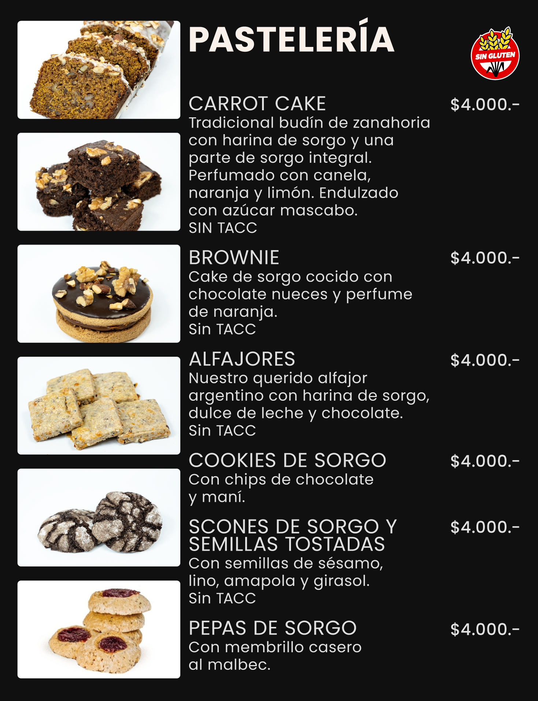

Beneficios de los alimentos con sorgo
El sorgo es un cereal inteligente que tiene muchas ventajas en la producción de alimentos además de ser muy buenos para nuestra salud.
Se cocina como el arroz o la quinoa y se puede servir de muchas maneras. Es un cereal
versátil y se puede transformar en harina, grano integral, pasta, leche, pochoclo,
copos,
cerveza y licores.
El grano de sorgo está repleto de nutrientes:
● Proteína para el desarrollo saludable de huesos, músculos, piel y enzimas.
● Hierro para fortalecer el sistema inmunológico y la capacidad de transporte de oxígeno en la sangre.
● Vitamina B6: fundamental para sintetizar anticuerpos y mejorar la función nerviosa.
● Niacina para mejorar la circulación sanguínea.
● Magnesio quién apoya la absorción de calcio y la regulación de la temperatura corporal.
● Fósforo quién ayuda a formar huesos sanos.
● 100% libre de gluten, es seguro para personas celiacas e intolerantes al gluten.
● Proteína para el desarrollo saludable de huesos, músculos, piel y enzimas.
● Hierro para fortalecer el sistema inmunológico y la capacidad de transporte de oxígeno en la sangre.
● Vitamina B6: fundamental para sintetizar anticuerpos y mejorar la función nerviosa.
● Niacina para mejorar la circulación sanguínea.
● Magnesio quién apoya la absorción de calcio y la regulación de la temperatura corporal.
● Fósforo quién ayuda a formar huesos sanos.
● 100% libre de gluten, es seguro para personas celiacas e intolerantes al gluten.
100% libre de gluten, es seguro para personas celiacas e intolerantes al gluten.
Tanto la harina de sorgo como el sorgo integral son excelentes sustitutos de las recetas a
base de trigo.
El grano de sorgo es rico en antioxidantes que reducen el riesgo de cáncer, diabetes,
enfermedades cardíacas y algunas enfermedades neurológicas.
El sorgo tiene un alto contenido de fibra, que es el último regulador corporal para el
sistema digestivo.
Alto en potasio y bajo en sodio, el grano de sorgo promueve una presión arterial saludable.
También contiene hierro, cobre, zinc y magnesio, que mejoran la circulación.
El sorgo es un carbohidrato complejo, que proporciona energía sostenida. También, contiene
niacina o vitamina B3, que ayuda a convertir los alimentos en energía.
¿Qué vas a probar hoy?
SEGUINOS EN
@advantasemillasarg